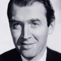
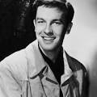

El reparto principal de La Soga está encabezado por tres actores destacados. James Stewart interpreta a Rupert Cadell, el antiguo profesor de los protagonistas, un personaje sarcástico e inteligente que representa la voz de la razón y la moralidad. Esta fue la primera colaboración entre Hitchcock y Stewart, quien más tarde se convertiría en uno de sus actores fetiche.

John Dall encarna a Brandon Shaw, el líder carismático y arrogante de la pareja, convencido de su superioridad intelectual. Farley Granger interpreta a Phillip Morgan, su compañero más nervioso y sensible, cuya culpa y miedo van creciendo a lo largo de la velada. Ambos transmiten con gran sutileza la compleja relación entre los dos jóvenes.

Completan el elenco Joan Chandler como Janet Walker, la prometida de la víctima; Sir Cedric Hardwicke como el señor Kentley, padre del joven asesinado; Constance Collier como la señora Atwater, tía de la víctima; Douglas Dick como Kenneth Lawrence; y Edith Evanson como la señora Wilson, el ama de llaves. Cada interpretación contribuye a crear una atmósfera de conversación civilizada que contrasta violentamente con el crimen oculto en la habitación.